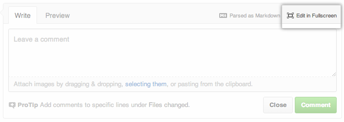

Issues, comments, and pull request descriptions are written using GitHub Flavored Markdown along with some additional features to make writing content on GitHub easy.
Markup
Newlines
The biggest difference with writing on GitHub is the way we handle linebreaks. With Markdown, you can hard wrap paragraphs of text to have them combine into a single paragraph. We find this causes a huge number of unintentional formatting errors. In comments, GitHub treats newlines in paragraph-like content as real line breaks, which is usually what you intended.
The next paragraph contains two phrases separated by a single newline character:
Roses are red
Violets are blue
becomes
Roses are red
Violets are blue
Task lists
Lists can be turned into task lists by prefacing list items with [ ] or [x] (incomplete or complete, respectively).
- [x] @mentions, #refs, [links](), **formatting**, and <del>tags</del> are supported
- [x] list syntax is required (any unordered or ordered list supported)
- [x] this is a complete item
- [ ] this is an incomplete item
Task lists render with checkboxes in all comments and Markdown files. Select or unselect these checkboxes to mark them as complete or incomplete across GitHub.
Task lists can be nested to better structure your tasks:
- [ ] a bigger project
- [ ] first subtask #1234
- [ ] follow up subtask #4321
- [ ] final subtask cc @mention
- [ ] a separate task
Task lists can be nested to arbitrary depths, though we recommend nesting at most once or twice; more complicated tasks should be broken out into separate lists.
References
Certain references are auto-linked:
* SHA: a5c3785ed8d6a35868bc169f07e40e889087fd2e
* User@SHA: jlord@a5c3785ed8d6a35868bc169f07e40e889087fd2e
* User/Repository@SHA: jlord/sheetsee.js@a5c3785ed8d6a35868bc169f07e40e889087fd2e
* #Num: #26
* GH-Num: GH-26
* User#Num: jlord#26
* User/Repository#Num: jlord/sheetsee.js#26
becomes
- SHA: a5c3785
- User@SHA: jlord@a5c3785
- User/Project@SHA: jlord/sheetsee.js@a5c3785
- #Num: #26
- GH-Num: GH-26
- User#Num: jlord#26
- User/Project#Num: jlord/sheetsee.js#26
Features
Quick quoting
Typing r on your keyboard lets you reply to the current issue or pull request with a comment. Any text you select within the discussion thread before pressing r will be added to your comment automatically and formatted as a blockquote.
Name and Team @mentions autocomplete
Typing an @ symbol will bring up a list of people or teams on a project. The list filters as you type, so once you find the name of the person or team you are looking for, you can use the arrow keys to select it and hit either tab or enter to complete the name. For teams, just enter the @organization/team-name and all members of that team will get subscribed to the issue.
The autocomplete results are restricted to repository collaborators and any other participants on the thread, so it's not a full global search. It uses the same fuzzy filter as the file finder and works for both usernames and full names.
Check out the blog posts for more information about @mention autocompletes for users and teams.
Emoji autocomplete
Typing : will bring up a list of suggested emoji. The list will filter as you type, so once you find the emoji you're looking for, press Tab or Enter to complete the highlighted result. For a full list of available emoji, check out emoji-cheat-sheet.com.
Issue autocompletion
Typing # will bring up a list of suggested Issues and Pull Requests. Type a number or some text to filter the list, then hit either tab or enter to complete the highlighted result.
Zen Mode (fullscreen) writing
Zen Mode allows you to write markdown in fullscreen mode. You'll find the Zen Mode button on comment, issue, and pull request forms across the site.

You can also use it when creating and editing files by using the Zen Mode button above the file box.
Zen Mode comes with both a light and a dark theme. You can change your theme using the switcher at the top right of the window.
Check out the blog post for more information about Zen writing mode.